Support Vector Machines#
In this chapter, we discuss the support vector machine (SVM), an approach for classification that was developed in the computer science community in the 1990s and that has grown in popularity since then. SVMs have been shown to perform well in a variety of settings, and are often considered one of the best “out of the box” classifiers.
The support vector machine is a generalization of a simple and intuitive classifier called the maximal margin classifier, which we introduce in Section 9.1. Though it is elegant and simple, we will see that this classifier unfortunately cannot be applied to most data sets, since it requires that the classes be separable by a linear boundary. In Section 9.2, we introduce the support vector classifier, an extension of the maximal margin classifier that can be applied in a broader range of cases. Section 9.3 introduces the support vector machine, which is a further extension of the support vector classifier in order to accommodate non-linear class boundaries. Support vector machines are intended for the binary classification setting in which there are two classes; in Section 9.4 we discuss extensions of support vector machines to the case of more than two classes. In Section 9.5 we discuss the close connections between support vector machines and other statistical methods such as logistic regression.
People often loosely refer to the maximal margin classifier, the support vector classifier, and the support vector machine as “support vector machines”. To avoid confusion, we will carefully distinguish between these three notions in this chapter.
9.1Maximal Margin Classifier#
In this section, we define a hyperplane and introduce the concept of an optimal separating hyperplane.
9.1.1What Is a Hyperplane?#
In a p-dimensional space, a hyperplane is a flat affine subspace of dimension p −1.1 For instance, in two dimensions, a hyperplane is a flat one-dimensional subspace—in other words, a line. In three dimensions, a hyperplane is a flat two-dimensional subspace—that is, a plane. In p > 3 dimensions, it can be hard to visualize a hyperplane, but the notion of a (p −1)-dimensional flat subspace still applies.
The mathematical definition of a hyperplane is quite simple. In two dimensions, a hyperplane is defined by the equation

for parameters β0, β1, and β2. When we say that (9.1) “defines” the hyperplane, we mean that any X = (X1, X2)T for which (9.1) holds is a point on the hyperplane. Note that (9.1) is simply the equation of a line, since indeed in two dimensions a hyperplane is a line.
Equation 9.1 can be easily extended to the p-dimensional setting:

defines a p-dimensional hyperplane, again in the sense that if a point X = (X1, X2,⋯, Xp)T in p-dimensional space (i.e. a vector of length p) satisfies (9.2), then X lies on the hyperplane.
Now, suppose that X does not satisfy (9.2); rather,

Then this tells us that X lies to one side of the hyperplane. On the other hand, if

then X lies on the other side of the hyperplane. So we can think of the hyperplane as dividing p-dimensional space into two halves. One can easily determine on which side of the hyperplane a point lies by simply calculating the sign of the left-hand side of (9.2). A hyperplane in two-dimensional space is shown in Figure 9.1.
9.1.2Classification Using a Separating Hyperplane#
Now suppose that we have an n × p data matrix X that consists of n training observations in p-dimensional space,

⋯⋯ and that these observations fall into two classes—that is, y1,⋯, yn ∈ {−1, 1} where −1 represents one class and 1 the other class. We also have a

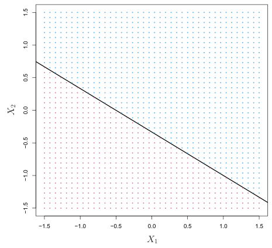
(T. Our test observation, a p-vector of observed features x∗='x∗⋯x∗ goal is to develop a classifier based on the training data that will correctly classify the test observation using its feature measurements. We have seen a number of approaches for this task, such as linear discriminant analysis and logistic regression in Chapter 4, and classification trees, bagging, and boosting in Chapter 8. We will now see a new approach that is based upon the concept of a separating hyperplane.
If a separating hyperplane exists, we can use it to construct a very natural classifier: a test observation is assigned a class depending on which side of the hyperplane it is located. The right-hand panel of Figure 9.2 shows an example of such a classifier. That is, we classify the test observation x∗ based on the sign of f(x∗) = β0+β1x∗1+β2x∗2+⋯+βpx∗p. If f(x∗) is positive, then we assign the test observation to class 1, and if f(x∗) is negative, then we assign it to class −1. We can also make use of the magnitude of f(x∗). If f(x∗) is far from zero, then this means that x∗lies far from the hyperplane, and so we can be confident about our class assignment for x∗. On the other hand, if f(x∗) is close to zero, then x∗is located near the hyperplane, and so we are less certain about the class assignment for x∗. Not surprisingly, and as we see in Figure 9.2, a classifier that is based on a separating hyperplane leads to a linear decision boundary.
Suppose that it is possible to construct a hyperplane that separates the training observations perfectly according to their class labels. Examples of three such separating hyperplanes are shown in the left-hand panel of Figure 9.2. We can label the observations from the blue class as yi = 1 and those from the purple class as yi = −1. Then a separating hyperplane has the property that

and

Equivalently, a separating hyperplane has the property that

for all i = 1,⋯, n.
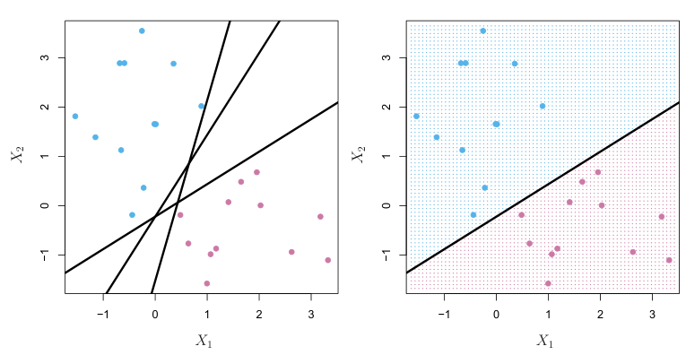
A natural choice is the maximal margin hyperplane (also known as the optimal separating hyperplane), which is the separating hyperplane that is farthest from the training observations. That is, we can compute the (perpendicular) distance from each training observation to a given separating hyperplane; the smallest such distance is the minimal distance from the observations to the hyperplane, and is known as the margin. The maximal margin hyperplane is the separating hyperplane for which the margin is largest—that is, it is the hyperplane that has the farthest minimum distance to the training observations. We can then classify a test observation based on which side of the maximal margin hyperplane it lies. This is known as the maximal margin classifier. We hope that a classifier that has a large margin on the training data will also have a large margin on the test data, and hence will classify the test observations correctly. Although the maximal margin classifier is often successful, it can also lead to overfitting when p is large.
9.1.3The Maximal Margin Classifier#
In general, if our data can be perfectly separated using a hyperplane, then there will in fact exist an infinite number of such hyperplanes. This is because a given separating hyperplane can usually be shifted a tiny bit up or down, or rotated, without coming into contact with any of the observations. Three possible separating hyperplanes are shown in the left-hand panel of Figure 9.2. In order to construct a classifier based upon a separating hyperplane, we must have a reasonable way to decide which of the infinite possible separating hyperplanes to use.
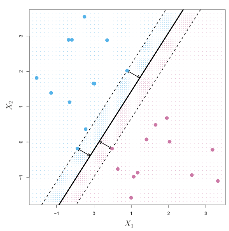
Examining Figure 9.3, we see that three training observations are equidistant from the maximal margin hyperplane and lie along the dashed lines indicating the width of the margin. These three observations are known as support vectors, since they are vectors in p-dimensional space (in Figure 9.3, p = 2) and they “support” the maximal margin hyperplane in the sense that if these points were moved slightly then the maximal margin hyperplane would move as well. Interestingly, the maximal margin hyperplane depends directly on the support vectors, but not on the other observations: a movement to any of the other observations would not affect the separating hyperplane, provided that the observation’s movement does not cause it to cross the boundary set by the margin. The fact that the maximal margin hyperplane depends directly on only a small subset of the observations is an important property that will arise later in this chapter when we discuss the support vector classifier and support vector machines.
If β0, β1,⋯, βp are the coefficients of the maximal margin hyperplane, then the maximal margin classifier classifies the test observation x∗based on the sign of f(x∗) = β0 + β1x∗1 + β2x∗2 +⋯ + βpx∗p.
Figure 9.3 shows the maximal margin hyperplane on the data set of Figure 9.2. Comparing the right-hand panel of Figure 9.2 to Figure 9.3, we see that the maximal margin hyperplane shown in Figure 9.3 does indeed result in a greater minimal distance between the observations and the separating hyperplane—that is, a larger margin. In a sense, the maximal margin hyperplane represents the mid-line of the widest “slab” that we can insert between the two classes.
9.1.4Construction of the Maximal Margin Classifier#
We now consider the task of constructing the maximal margin hyperplane based on a set of n training observations x1,⋯, xn ∈Rp and associated class labels y1,⋯, yn ∈{−1, 1}. Briefly, the maximal margin hyperplane is the solution to the optimization problem

This optimization problem (9.9)–(9.11) is actually simpler than it looks. First of all, the constraint in (9.11) that
The maximal margin classifier is a very natural way to perform classification, if a separating hyperplane exists. However, as we have hinted, in many cases no separating hyperplane exists, and so there is no maximal margin classifier. In this case, the optimization problem (9.9)–(9.11) has no solution with M > 0. An example is shown in Figure 9.4. In this case, we cannot exactly separate the two classes. However, as we will see in the next section, we can extend the concept of a separating hyperplane in order to develop a hyperplane that almost separates the classes, using a so-called soft margin. The generalization of the maximal margin classifier to the non-separable case is known as the support vector classifier.

guarantees that each observation will be on the correct side of the hyperplane, provided that M is positive. (Actually, for each observation to be on the correct side of the hyperplane we would simply need yi(β0 +β1xi1 + β2xi2+⋯+βpxip) > 0, so the constraint in (9.11) in fact requires that each observation be on the correct side of the hyperplane, with some cushion, provided that M is positive.)
Second, note that (9.10) is not really a constraint on the hyperplane, since if β0 + β1xi1 + β2xi2 +⋯ + βpxip = 0 defines a hyperplane, then so does k(β0 + β1xi1 + β2xi2 +⋯ + βpxip) = 0 for any k̸ = 0. However, (9.10) adds meaning to (9.11); one can show that with this constraint the perpendicular distance from the ith observation to the hyperplane is given by

Therefore, the constraints (9.10) and (9.11) ensure that each observation is on the correct side of the hyperplane and at least a distance M from the hyperplane. Hence, M represents the margin of our hyperplane, and the optimization problem chooses β0, β1,⋯, βp to maximize M. This is exactly the definition of the maximal margin hyperplane! The problem (9.9)–(9.11) can be solved efficiently, but details of this optimization are outside of the scope of this book.
9.1.5The Non-separable Case#
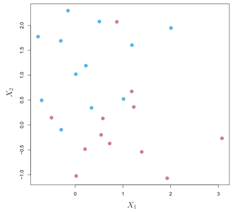
9.2Support Vector Classifiers#
9.2.1Overview of the Support Vector Classifier#
In Figure 9.4, we see that observations that belong to two classes are not necessarily separable by a hyperplane. In fact, even if a separating hyperplane does exist, then there are instances in which a classifier based on a separating hyperplane might not be desirable. A classifier based on a separating hyperplane will necessarily perfectly classify all of the training observations; this can lead to sensitivity to individual observations. An example is shown in Figure 9.5. The addition of a single observation in the right-hand panel of Figure 9.5 leads to a dramatic change in the maximal margin hyperplane. The resulting maximal margin hyperplane is not satisfactory—for one thing, it has only a tiny margin. This is problematic because as discussed previously, the distance of an observation from the hyperplane can be seen as a measure of our confidence that the observation was correctly classified. Moreover, the fact that the maximal margin hyperplane is extremely sensitive to a change in a single observation suggests that it may have overfit the training data.
In this case, we might be willing to consider a classifier based on a hyperplane that does not perfectly separate the two classes, in the interest of
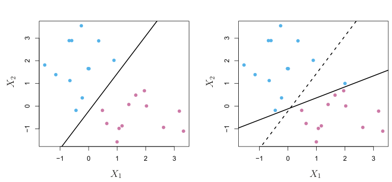
- Greater robustness to individual observations, and
- Better classification of most of the training observations.
The support vector classifier classifies a test observation depending on which side of a hyperplane it lies. The hyperplane is chosen to correctly separate most of the training observations into the two classes, but may misclassify a few observations. It is the solution to the optimization problem
That is, it could be worthwhile to misclassify a few training observations in order to do a better job in classifying the remaining observations.
The support vector classifier, sometimes called a soft margin classifier, does exactly this. Rather than seeking the largest possible margin so that every observation is not only on the correct side of the hyperplane but also on the correct side of the margin, we instead allow some observations to be on the incorrect side of the margin, or even the incorrect side of the hyperplane. (The margin is soft because it can be violated by some of the training observations.) An example is shown in the left-hand panel of Figure 9.6. Most of the observations are on the correct side of the margin. However, a small subset of the observations are on the wrong side of the margin.
An observation can be not only on the wrong side of the margin, but also on the wrong side of the hyperplane. In fact, when there is no separating hyperplane, such a situation is inevitable. Observations on the wrong side of the hyperplane correspond to training observations that are misclassified by the support vector classifier. The right-hand panel of Figure 9.6 illustrates such a scenario.
9.2.2Details of the Support Vector Classifier#
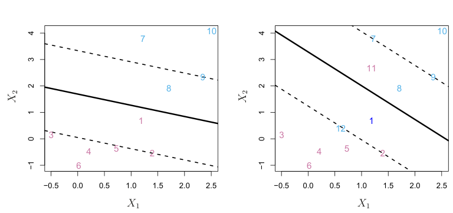

where C is a nonnegative tuning parameter. As in (9.11), M is the width of the margin; we seek to make this quantity as large as possible. In (9.14), ϵ1,⋯, ϵn are slack variables that allow individual observations to be on the wrong side of the margin or the hyperplane; we will explain them in greater detail momentarily. Once we have solved (9.12)–(9.15), we classify a test observation x∗as before, by simply determining on which side of the hyperplane it lies. That is, we classify the test observation based on the sign of f(x∗) = β0 + β1x∗1 +⋯ + βpx∗p.
The problem (9.12)–(9.15) seems complex, but insight into its behavior can be made through a series of simple observations presented below. First of all, the slack variable ϵi tells us where the ith observation is located, relative to the hyperplane and relative to the margin. If ϵi = 0 then the ith observation is on the correct side of the margin, as we saw in Section 9.1.4. If ϵi > 0 then the ith observation is on the wrong side of the margin, and we say that the ith observation has violated the margin. If ϵi > 1 then it is on the wrong side of the hyperplane.
We now consider the role of the tuning parameter C. In (9.15), C bounds the sum of the ϵi’s, and so it determines the number and severity of the violations to the margin (and to the hyperplane) that we will tolerate. We can think of C as a budget for the amount that the margin can be violated by the n observations. If C = 0 then there is no budget for violations to the margin, and it must be the case that ϵ1 = ⋯ = ϵn = 0, in which case (9.12)–(9.15) simply amounts to the maximal margin hyperplane optimization problem (9.9)–(9.11). (Of course, a maximal margin hyperplane exists only if the two classes are separable.) For C > 0 no more than C observations can be on the wrong side of the hyperplane, because if an observation is on the wrong side of the hyperplane then ϵi > 1, and (9.15) requires that )n
i=1 ϵi ≤C. As the budget C increases, we become more tolerant of violations to the margin, and so the margin will widen. Conversely, as C decreases, we become less tolerant of violations to the margin and so the margin narrows. An example is shown in Figure 9.7.
In practice, C is treated as a tuning parameter that is generally chosen via cross-validation. As with the tuning parameters that we have seen throughout this book, C controls the bias-variance trade-off of the statistical learning technique. When C is small, we seek narrow margins that are rarely violated; this amounts to a classifier that is highly fit to the data, which may have low bias but high variance. On the other hand, when C is larger, the margin is wider and we allow more violations to it; this amounts to fitting the data less hard and obtaining a classifier that is potentially more biased but may have lower variance.
The optimization problem (9.12)–(9.15) has a very interesting property: it turns out that only observations that either lie on the margin or that violate the margin will affect the hyperplane, and hence the classifier obtained. In other words, an observation that lies strictly on the correct side of the margin does not affect the support vector classifier! Changing the position of that observation would not change the classifier at all, provided that its position remains on the correct side of the margin. Observations that lie directly on the margin, or on the wrong side of the margin for their class, are known as support vectors. These observations do affect the support vector classifier.
The fact that only support vectors affect the classifier is in line with our previous assertion that C controls the bias-variance trade-off of the support vector classifier. When the tuning parameter C is large, then the margin is wide, many observations violate the margin, and so there are many support vectors. In this case, many observations are involved in determining the hyperplane. The top left panel in Figure 9.7 illustrates this setting: this classifier has low variance (since many observations are support vectors) but potentially high bias. In contrast, if C is small, then there will be fewer support vectors and hence the resulting classifier will have low bias but high variance. The bottom right panel in Figure 9.7 illustrates this setting, with only eight support vectors.
The fact that the support vector classifier’s decision rule is based only on a potentially small subset of the training observations (the support vectors) means that it is quite robust to the behavior of observations that are far away from the hyperplane. This property is distinct from some of the other classification methods that we have seen in preceding chapters, such as linear discriminant analysis. Recall that the LDA classification rule depends on the mean of all of the observations within each class, as well as the within-class covariance matrix computed using all of the observations. In contrast, logistic regression, unlike LDA, has very low sensitivity to observations far from the decision boundary. In fact we will see in Section 9.5 that the support vector classifier and logistic regression are closely related.
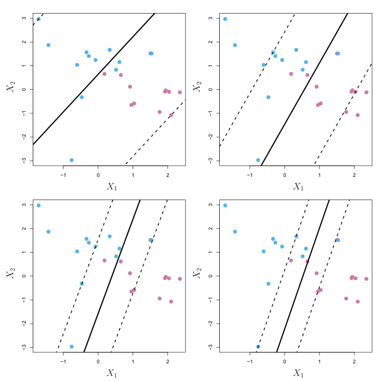
9.3Support Vector Machines#
We first discuss a general mechanism for converting a linear classifier into one that produces non-linear decision boundaries. We then introduce the support vector machine, which does this in an automatic way.
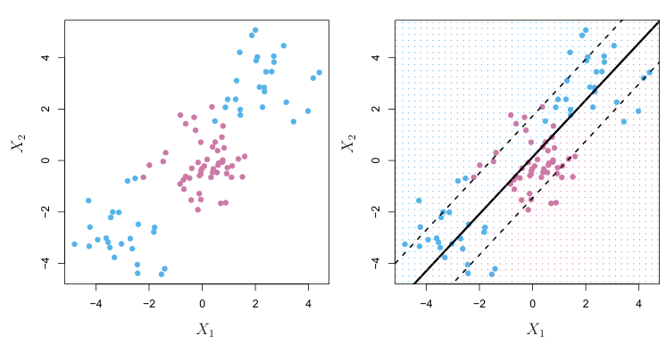
9.3.1Classification with Non-Linear Decision Boundaries#
The support vector classifier is a natural approach for classification in the two-class setting, if the boundary between the two classes is linear. However, in practice we are sometimes faced with non-linear class boundaries. For instance, consider the data in the left-hand panel of Figure 9.8. It is clear that a support vector classifier or any linear classifier will perform poorly here. Indeed, the support vector classifier shown in the right-hand panel of Figure 9.8 is useless here.
In Chapter 7, we are faced with an analogous situation. We see there that the performance of linear regression can suffer when there is a nonlinear relationship between the predictors and the outcome. In that case, we consider enlarging the feature space using functions of the predictors, such as quadratic and cubic terms, in order to address this non-linearity. In the case of the support vector classifier, we could address the problem of possibly non-linear boundaries between classes in a similar way, by enlarging the feature space using quadratic, cubic, and even higher-order polynomial functions of the predictors. For instance, rather than fitting a support vector classifier using p features
X1, X2,⋯, Xp,
we could instead fit a support vector classifier using 2p features

Then (9.12)–(9.15) would become

subject to yiβ0 +βj1xij +βj2x2ij≥M(1 −ϵi),

Why does this lead to a non-linear decision boundary? In the enlarged feature space, the decision boundary that results from (9.16) is in fact linear. But in the original feature space, the decision boundary is of the form q(x) = 0, where q is a quadratic polynomial, and its solutions are generally non-linear. One might additionally want to enlarge the feature space with higher-order polynomial terms, or with interaction terms of the form XjXj′ for j̸ = j′. Alternatively, other functions of the predictors could be considered rather than polynomials. It is not hard to see that there are many possible ways to enlarge the feature space, and that unless we are careful, we could end up with a huge number of features. Then computations would become unmanageable. The support vector machine, which we present next, allows us to enlarge the feature space used by the support vector classifier in a way that leads to efficient computations.
9.3.2The Support Vector Machine#
The support vector machine (SVM) is an extension of the support vector classifier that results from enlarging the feature space in a specific way, using kernels. We will now discuss this extension, the details of which are somewhat complex and beyond the scope of this book. However, the main idea is described in Section 9.3.1: we may want to enlarge our feature space in order to accommodate a non-linear boundary between the classes. The kernel approach that we describe here is simply an efficient computational approach for enacting this idea.
We have not discussed exactly how the support vector classifier is computed because the details become somewhat technical. However, it turns out that the solution to the support vector classifier problem (9.12)–(9.15) involves only the inner products of the observations (as opposed to the observations themselves). The inner product of two r-vectors a and b is defined as ⟨a, b⟩= )r
i=1 aibi. Thus the inner product of two observations xi, xi′ is given by

It can be shown that
- The linear support vector classifier can be represented as

where there are n parameters αi, i = 1,⋯, n, one per training observation.
- To estimate the parameters α1,⋯, αn and β0, all we need are the ( 'n 2inner products( ⟨xi, xi′⟩between all pairs of training observations. 'n (The notationmeans n(n −1)/2, and gives the number of pairs among a set of n items.) Notice that in (9.18), in order to evaluate the function f(x), we need to compute the inner product between the new point x and each of the training points xi. However, it turns out that αi is nonzero only for the support vectors in the solution—that is, if a training observation is not a support vector, then its αi equals zero. So if S is the collection of indices of these support points, we can rewrite any solution function of the form (9.18) as

which typically involves far fewer terms than in (9.18).2
To summarize, in representing the linear classifier f(x), and in computing its coefficients, all we need are inner products.
This is known as a polynomial kernel of degree d, where d is a positive integer. Using such a kernel with d > 1, instead of the standard linear kernel (9.21), in the support vector classifier algorithm leads to a much more flexible decision boundary. It essentially amounts to fitting a support vector classifier in a higher-dimensional space involving polynomials of degree d, rather than in the original feature space. When the support vector classifier is combined with a non-linear kernel such as (9.22), the resulting classifier is known as a support vector machine. Note that in this case the (non-linear) function has the form
Now suppose that every time the inner product (9.17) appears in the representation (9.18), or in a calculation of the solution for the support vector classifier, we replace it with a generalization of the inner product of the form

where K is some function that we will refer to as a kernel. A kernel is a function that quantifies the similarity of two observations. For instance, we could simply take

which would just give us back the support vector classifier. Equation 9.21 is known as a linear kernel because the support vector classifier is linear in the features; the linear kernel essentially quantifies the similarity of a pair of observations using Pearson (standard) correlation. But one could instead choose another form for (9.20). For instance, one could replace every instance of )p
j=1 xijxi′j with the quantity

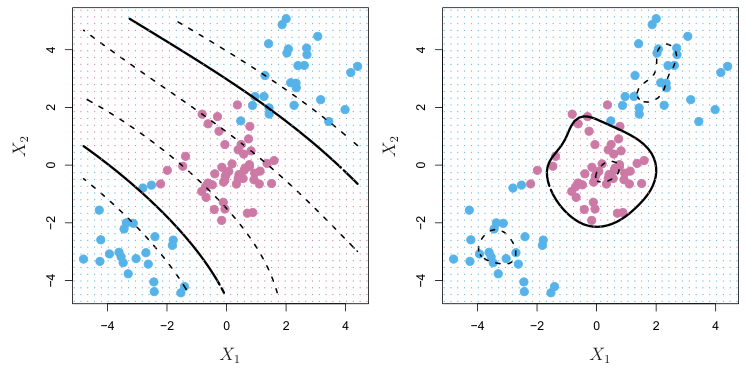
j=1(x∗j −xij)2) will be tiny. This means that in (9.23), xi will play virtually no role in f(x∗). Recall that the predicted class label for the test observation x∗is based on the sign of f(x∗). In other words, training observations that are far from x∗will play essentially no role in the predicted class label for x∗. This means that the radial kernel has very local behavior, in the sense that only nearby training observations have an effect on the class label of a test observation.

The left-hand panel of Figure 9.9 shows an example of an SVM with a polynomial kernel applied to the non-linear data from Figure 9.8. The fit is a substantial improvement over the linear support vector classifier. When d = 1, then the SVM reduces to the support vector classifier seen earlier in this chapter.
The polynomial kernel shown in (9.22) is one example of a possible non-linear kernel, but alternatives abound. Another popular choice is the radial kernel, which takes the form

In (9.24), γ is a positive constant. The right-hand panel of Figure 9.9 shows an example of an SVM with a radial kernel on this non-linear data; it also does a good job in separating the two classes.
How does the radial kernel (9.24) actually work? If a given test observation x∗= (x∗
1,⋯, x∗p)T is far from a training observation xi in terms of Euclidean distance, then )p
j=1(x∗j −xij)2 will be large, and so K(x∗, xi) = exp(−γ )p
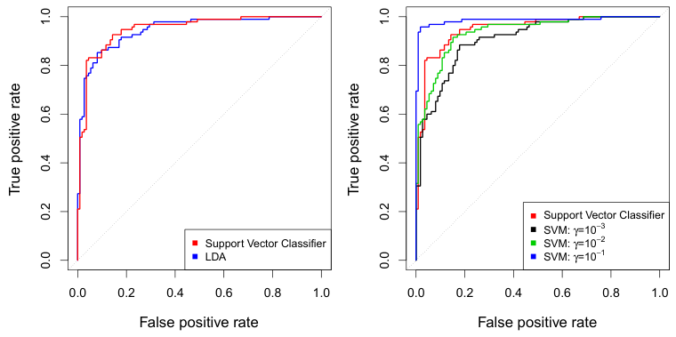
We first fit LDA and the support vector classifier to the training data. Note that the support vector classifier is equivalent to an SVM using a polynomial kernel of degree d = 1. The left-hand panel of Figure 9.10 displays ROC curves (described in Section 4.4.2) for the training set predictions for both LDA and the support vector classifier. Both classifiers compute scores of the form f̂(X) = β̂0 + β̂1X1 + β̂2X2 +⋯ + β̂pXp for each observation. For any given cutoff t, we classify observations into the heart disease or no heart disease categories depending on whether f̂(X) < t or f̂(X) ≥t. The ROC curve is obtained by forming these predictions and computing the false positive and true positive rates for a range of values of t. An optimal classifier will hug the top left corner of the ROC plot. In this instance LDA and the support vector classifier both perform well, though there is a suggestion that the support vector classifier may be slightly superior.
What is the advantage of using a kernel rather than simply enlarging the feature space using functions of the original features, as in (9.16)? One advantage is computational, and it amounts to the fact that using kernels,
( 'n one need only compute K(xi, x′i) for all2distinct pairs i, i′. This can be done without explicitly working in the enlarged feature space. This is important because in many applications of SVMs, the enlarged feature space is so large that computations are intractable. For some kernels, such as the radial kernel (9.24), the feature space is implicit and infinite-dimensional, so we could never do the computations there anyway!
9.3.3An Application to the Heart Disease Data#
In Chapter 8 we apply decision trees and related methods to the Heart data. The aim is to use 13 predictors such as Age, Sex, and Chol in order to predict whether an individual has heart disease. We now investigate how an SVM compares to LDA on this data. After removing 6 missing observations, the data consist of 297 subjects, which we randomly split into 207 training and 90 test observations.
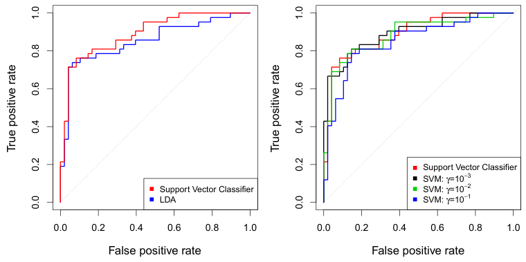
The right-hand panel of Figure 9.10 displays ROC curves for SVMs using a radial kernel, with various values of γ. As γ increases and the fit becomes more non-linear, the ROC curves improve. Using γ = 10−1 appears to give an almost perfect ROC curve. However, these curves represent training error rates, which can be misleading in terms of performance on new test data. Figure 9.11 displays ROC curves computed on the 90 test observations. We observe some differences from the training ROC curves. In the left-hand panel of Figure 9.11, the support vector classifier appears to have a small advantage over LDA (although these differences are not statistically significant). In the right-hand panel, the SVM using γ = 10−1, which showed the best results on the training data, produces the worst estimates on the test data. This is once again evidence that while a more flexible method will often produce lower training error rates, this does not necessarily lead to improved performance on test data. The SVMs with γ = 10−2 and γ = 10−3 perform comparably to the support vector classifier, and all three outperform the SVM with γ = 10−1.
9.4SVMs with More than Two Classes#
So far, our discussion has been limited to the case of binary classification: that is, classification in the two-class setting. How can we extend SVMs to the more general case where we have some arbitrary number of classes? It turns out that the concept of separating hyperplanes upon which SVMs are based does not lend itself naturally to more than two classes. Though a number of proposals for extending SVMs to the K-class case have been made, the two most popular are the one-versus-one and one-versus-all approaches. We briefly discuss those two approaches here.
9.4.1One-Versus-One Classification#
where λ is a nonnegative tuning parameter. When λ is large then β1,⋯, βp are small, more violations to the margin are tolerated, and a low-variance but high-bias classifier will result. When λ is small then few violations to the margin will occur; this amounts to a high-variance but low-bias classifier. Thus, a small value of λ in (9.25) amounts to a small value of C in (9.15). Note that the λ )p
Suppose that we would like to perform classification using SVMs, and there
( 'K are K > 2 classes. A one-versus-one or all-pairs approach constructs SVMs, each of which compares a pair of classes. For example, one such SVM might compare the kth class, coded as +1, to the k′th class, coded
( 'K as −1. We classify a test observation using each of theclassifiers, and we tally the number of times that the test observation is assigned to each of the K classes. The final classification is performed by assigning the test observation to the class to which it was most frequently assigned in these
( 'K
pairwise classifications.
9.4.2One-Versus-All Classification#
The one-versus-all approach (also referred to as one-versus-rest) is an alternative procedure for applying SVMs in the case of K > 2 classes. We fit K SVMs, each time comparing one of the K classes to the remaining K −1 classes. Let β0k, β1k,⋯, βpk denote the parameters that result from fitting an SVM comparing the kth class (coded as +1) to the others (coded as −1). Let x∗denote a test observation. We assign the observation to the class for which β0k +β1kx∗1 +β2kx∗2 +⋯+βpkx∗p is largest, as this amounts to a high level of confidence that the test observation belongs to the kth class rather than to any of the other classes.
9.5Relationship to Logistic Regression#
When SVMs were first introduced in the mid-1990s, they made quite a splash in the statistical and machine learning communities. This was due in part to their good performance, good marketing, and also to the fact that the underlying approach seemed both novel and mysterious. The idea of finding a hyperplane that separates the data as well as possible, while allowing some violations to this separation, seemed distinctly different from classical approaches for classification, such as logistic regression and linear discriminant analysis. Moreover, the idea of using a kernel to expand the feature space in order to accommodate non-linear class boundaries appeared to be a unique and valuable characteristic.
However, since that time, deep connections between SVMs and other more classical statistical methods have emerged. It turns out that one can rewrite the criterion (9.12)–(9.15) for fitting the support vector classifier

j=1 βj2 term in (9.25) is the ridge penalty term from Section 6.2.1, and plays a similar role in controlling the bias-variance trade-off for the support vector classifier.
Now (9.25) takes the “Loss + Penalty” form that we have seen repeatedly throughout this book:

In (9.26), L(X, y, β) is some loss function quantifying the extent to which the model, parametrized by β, fits the data (X, y), and P(β) is a penalty function on the parameter vector β whose effect is controlled by a nonnegative tuning parameter λ. For instance, ridge regression and the lasso both take this form with

and with P(β) = )p
j=1 βj2 for ridge regression and P(β) = )pj=1 |βj| for the lasso. In the case of (9.25) the loss function instead takes the form

This is known as hinge loss, and is depicted in Figure 9.12. However, it turns out that the hinge loss function is closely related to the loss function used in logistic regression, also shown in Figure 9.12.
An interesting characteristic of the support vector classifier is that only support vectors play a role in the classifier obtained; observations on the correct side of the margin do not affect it. This is due to the fact that the loss function shown in Figure 9.12 is exactly zero for observations for which yi(β0 + β1xi1 +⋯ + βpxip) ≥1; these correspond to observations that are on the correct side of the margin.3 In contrast, the loss function for logistic regression shown in Figure 9.12 is not exactly zero anywhere. But it is very small for observations that are far from the decision boundary. Due to the similarities between their loss functions, logistic regression and the support vector classifier often give very similar results. When the classes are well separated, SVMs tend to behave better than logistic regression; in more overlapping regimes, logistic regression is often preferred.
When the support vector classifier and SVM were first introduced, it was thought that the tuning parameter C in (9.15) was an unimportant “nuisance” parameter that could be set to some default value, like 1. However, the “Loss + Penalty” formulation (9.25) for the support vector classifier indicates that this is not the case. The choice of tuning parameter is very important and determines the extent to which the model underfits or overfits the data, as illustrated, for example, in Figure 9.7.
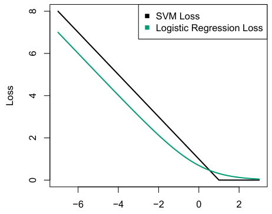

We have established that the support vector classifier is closely related to logistic regression and other preexisting statistical methods. Is the SVM unique in its use of kernels to enlarge the feature space to accommodate non-linear class boundaries? The answer to this question is “no”. We could just as well perform logistic regression or many of the other classification methods seen in this book using non-linear kernels; this is closely related to some of the non-linear approaches seen in Chapter 7. However, for historical reasons, the use of non-linear kernels is much more widespread in the context of SVMs than in the context of logistic regression or other methods.
Though we have not addressed it here, there is in fact an extension of the SVM for regression (i.e. for a quantitative rather than a qualitative response), called support vector regression. In Chapter 3, we saw that least squares regression seeks coefficients β0, β1,⋯, βp such that the sum of squared residuals is as small as possible. (Recall from Chapter 3 that residuals are defined as yi −β0 −β1xi1 −⋯ −βpxip.) Support vector regression instead seeks coefficients that minimize a different type of loss, where only residuals larger in absolute value than some positive constant contribute to the loss function. This is an extension of the margin used in support vector classifiers to the regression setting.
9.6Lab: Support Vector Machines#
In this lab, we use the sklearn.svm library to demonstrate the support vector classifier and the support vector machine.
We import some of our usual libraries.
In [1]: import numpy as np
from matplotlib.pyplot import subplots, cm
import sklearn.model_selection as skm
from ISLP import load_data, confusion_tableWe also collect the new imports needed for this lab.
In [2]: from sklearn.svm import SVC
from ISLP.svm import plot as plot_svm
from sklearn.metrics import RocCurveDisplayWe will use the function RocCurveDisplay.from_estimator() to produce several ROC plots, using a shorthand roc_curve.
Display.from_
estimator()
In [3]: roc_curve = RocCurveDisplay.from_estimator # shorthand9.6.1Support Vector Classifier#
We now use the SupportVectorClassifier() function (abbreviated SVC()) SupportVectorfrom sklearn to fit the support vector classifier for a given value of the parameter C. The C argument allows us to specify the cost of a violation to the margin. When the cost argument is small, then the margins will be wide and many support vectors will be on the margin or will violate the margin. When the C argument is large, then the margins will be narrow and there will be few support vectors on the margin or violating the margin.
Classifier()Here we demonstrate the use of SVC() on a two-dimensional example, so that we can plot the resulting decision boundary. We begin by generating the observations, which belong to two classes, and checking whether the classes are linearly separable.
In [4]: rng = np.random.default_rng(1)
X = rng.standard_normal((50, 2))
y = np.array([-1]*25+[1]*25)
X[y==1] += 1
fig, ax = subplots(figsize=(8,8))
ax.scatter(X[:,0],
X[:,1],
c=y,
cmap=cm.coolwarm);They are not. We now fit the classifier.
In [5]: svm_linear = SVC(C=10, kernel='linear')
svm_linear.fit(X, y)
Out[5]: SVC(C=10, kernel='linear')The support vector classifier with two features can be visualized by plotting values of its decision function. We have included a function for this in the ISLP package (inspired by a similar example in the sklearn docs).
In [6]: fig, ax = subplots(figsize=(8,8))
plot_svm(X,
y,
svm_linear,
ax=ax)The decision boundary between the two classes is linear (because we used the argument kernel='linear'). The support vectors are marked with + and the remaining observations are plotted as circles.
What if we instead used a smaller value of the cost parameter?
In [7]: svm_linear_small = SVC(C=0.1, kernel='linear')
svm_linear_small.fit(X, y)
fig, ax = subplots(figsize=(8,8))
plot_svm(X,
y,
svm_linear_small,
ax=ax)With a smaller value of the cost parameter, we obtain a larger number of support vectors, because the margin is now wider. For linear kernels, we can extract the coefficients of the linear decision boundary as follows:
In [8]: svm_linear.coef_
Out[8]: array([[1.173, 0.7734]])Since the support vector machine is an estimator in sklearn, we can use the usual machinery to tune it.
In [9]: kfold = skm.KFold(5,
random_state=0,
shuffle=True)
grid = skm.GridSearchCV(svm_linear,
{'C':[0.001,0.01,0.1,1,5,10,100]},
refit=True,
cv=kfold,
scoring='accuracy')
grid.fit(X, y)
grid.best_params_
Out[9]: {'C': 1}We can easily access the cross-validation errors for each of these models in grid.cv_results_. This prints out a lot of detail, so we extract the accuracy results only.
In [10]: grid.cv_results_[('mean_test_score')]
Out[10]: array([0.46, 0.46, 0.72, 0.74, 0.74, 0.74, 0.74])We see that C=1 results in the highest cross-validation accuracy of 0.74, though the accuracy is the same for several values of C. The classifier grid.best_estimator_ can be used to predict the class label on a set of test observations. Let’s generate a test data set.
In [11]: X_test = rng.standard_normal((20, 2))
y_test = np.array([-1]*10+[1]*10)
X_test[y_test==1] += 1Now we predict the class labels of these test observations. Here we use the best model selected by cross-validation in order to make the predictions.
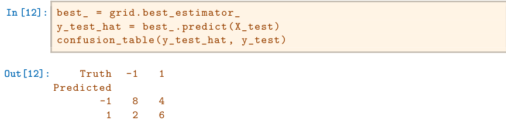
Thus, with this value of C, 70% of the test observations are correctly classified. What if we had instead used C=0.001?
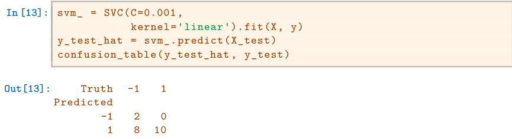
In this case 60% of test observations are correctly classified.
We now consider a situation in which the two classes are linearly separable. Then we can find an optimal separating hyperplane using the SVC() estimator. We first further separate the two classes in our simulated data so that they are linearly separable:
In [14]: X[y==1] += 1.9;
fig, ax = subplots(figsize=(8,8))
ax.scatter(X[:,0], X[:,1], c=y, cmap=cm.coolwarm);Now the observations are just barely linearly separable.
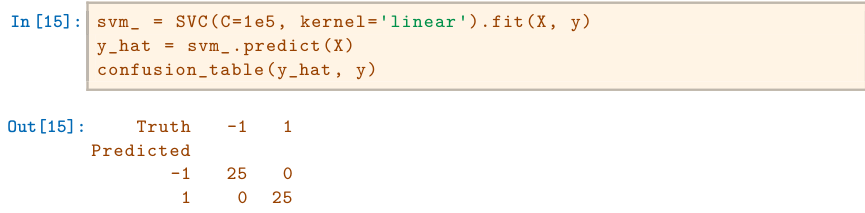
We fit the support vector classifier and plot the resulting hyperplane, using a very large value of C so that no observations are misclassified.
In [16]: fig, ax = subplots(figsize=(8,8))
plot_svm(X,
y,
svm_,
ax=ax)Indeed no training errors were made and only three support vectors were used. In fact, the large value of C also means that these three support points are on the margin, and define it. One may wonder how good the classifier could be on test data that depends on only three data points! We now try a smaller value of C.
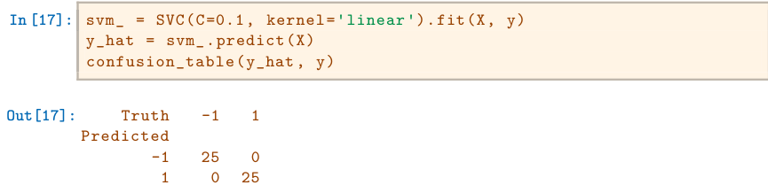
Using C=0.1, we again do not misclassify any training observations, but we also obtain a much wider margin and make use of twelve support vectors. These jointly define the orientation of the decision boundary, and since there are more of them, it is more stable. It seems possible that this model will perform better on test data than the model with C=1e5 (and indeed, a simple experiment with a large test set would bear this out).
In [18]: fig, ax = subplots(figsize=(8,8))
plot_svm(X,
y,
svm_,
ax=ax)9.6.2Support Vector Machine#
In order to fit an SVM using a non-linear kernel, we once again use the SVC() estimator. However, now we use a different value of the parameter kernel. To fit an SVM with a polynomial kernel we use kernel="poly", and to fit an SVM with a radial kernel we use kernel="rbf". In the former case we also use the degree argument to specify a degree for the polynomial kernel (this is d in (9.22)), and in the latter case we use gamma to specify a value of γ for the radial basis kernel (9.24).
We first generate some data with a non-linear class boundary, as follows:
In [19]: X = rng.standard_normal((200, 2))
X[:100] += 2
X[100:150] -= 2
y = np.array([1]*150+[2]*50)Plotting the data makes it clear that the class boundary is indeed nonlinear.
In [20]: fig, ax = subplots(figsize=(8,8))
ax.scatter(X[:,0],
X[:,1],
c=y,
cmap=cm.coolwarm)
Out[20]: <matplotlib.collections.PathCollection at 0x7faa9ba52eb0 >The data is randomly split into training and testing groups. We then fit the training data using the SVC() estimator with a radial kernel and γ = 1:
In [21]: (X_train,
X_test,
y_train,
y_test) = skm.train_test_split(X,
y,
test_size=0.5,
random_state=0)
svm_rbf = SVC(kernel="rbf", gamma=1, C=1)
svm_rbf.fit(X_train, y_train)The plot shows that the resulting SVM has a decidedly non-linear boundary.
In [22]: fig, ax = subplots(figsize=(8,8))
plot_svm(X_train,
y_train,
svm_rbf,
ax=ax)We can see from the figure that there are a fair number of training errors in this SVM fit. If we increase the value of C, we can reduce the number of training errors. However, this comes at the price of a more irregular decision boundary that seems to be at risk of overfitting the data.
In [23]: svm_rbf = SVC(kernel="rbf", gamma=1, C=1e5)
svm_rbf.fit(X_train, y_train)
fig, ax = subplots(figsize=(8,8))
plot_svm(X_train,
y_train,
svm_rbf,
ax=ax)We can perform cross-validation using skm.GridSearchCV() to select the best choice of γ and C for an SVM with a radial kernel:
In [24]: kfold = skm.KFold(5,
random_state=0,
shuffle=True)
grid = skm.GridSearchCV(svm_rbf,
{'C':[0.1,1,10,100,1000],
'gamma':[0.5,1,2,3,4]},
refit=True,
cv=kfold,
scoring='accuracy');
grid.fit(X_train, y_train)
grid.best_params_
Out[24]: {'C': 100, 'gamma': 1}The best choice of parameters under five-fold CV is achieved at C=1 and gamma=0.5, though several other values also achieve the same value.
In [25]: best_svm = grid.best_estimator_
fig, ax = subplots(figsize=(8,8))
plot_svm(X_train,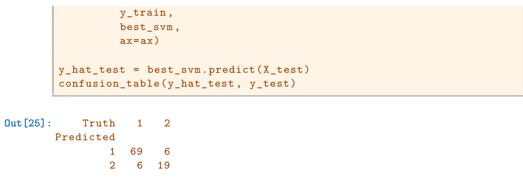
With these parameters, 12% of test observations are misclassified by this SVM.
9.6.3ROC Curves#
SVMs and support vector classifiers output class labels for each observation. However, it is also possible to obtain fitted values for each observation, which are the numerical scores used to obtain the class labels. For instance, in the case of a support vector classifier, the fitted value for an observation X = (X1, X2,⋯, Xp)T takes the form β̂0 + β̂1X1 + β̂2X2 +⋯ + β̂pXp. For an SVM with a non-linear kernel, the equation that yields the fitted value is given in (9.23). The sign of the fitted value determines on which side of the decision boundary the observation lies. Therefore, the relationship between the fitted value and the class prediction for a given observation is simple: if the fitted value exceeds zero then the observation is assigned to one class, and if it is less than zero then it is assigned to the other. By changing this threshold from zero to some positive value, we skew the classifications in favor of one class versus the other. By considering a range of these thresholds, positive and negative, we produce the ingredients for a ROC plot. We can access these values by calling the decision_function() method of a fitted SVM estimator.
decision()The function ROCCurveDisplay.from_estimator() (which we have abbreviated to roc_curve()) will produce a plot of a ROC curve. It takes a fitted estimator as its first argument, followed by a model matrix X and labels y. The argument name is used in the legend, while color is used for the color of the line. Results are plotted on our axis object ax.
In [26]: fig, ax = subplots(figsize=(8,8))
roc_curve(best_svm,
X_train,
y_train,
name='Training',
color='r',
ax=ax);In this example, the SVM appears to provide accurate predictions. By increasing γ we can produce a more flexible fit and generate further improvements in accuracy.
In [27]: svm_flex = SVC(kernel="rbf",
gamma=50,C=1)
svm_flex.fit(X_train, y_train)
fig, ax = subplots(figsize=(8,8))
roc_curve(svm_flex,
X_train,
y_train,
name='Training $\gamma=50$',
color='r',
ax=ax);However, these ROC curves are all on the training data. We are really more interested in the level of prediction accuracy on the test data. When we compute the ROC curves on the test data, the model with γ = 0.5 appears to provide the most accurate results.
In [28]: roc_curve(svm_flex,
X_test,
y_test,
name='Test $\gamma=50$',
color='b',
ax=ax)
fig;Let’s look at our tuned SVM.
In [29]: fig, ax = subplots(figsize=(8,8))
for (X_, y_, c, name) in zip(
(X_train, X_test),
(y_train, y_test),
('r', 'b'),
('CV tuned on training',
'CV tuned on test')):
roc_curve(best_svm,
X_,
y_,
name=name,
ax=ax,
color=c)9.6.4SVM with Multiple Classes#
If the response is a factor containing more than two levels, then the SVC() function will perform multi-class classification using either the one-versusone approach (when decision_function_shape=='ovo') or one-versus-rest4 (when decision_function_shape=='ovr'). We explore that setting briefly here by generating a third class of observations.
In [30]: rng = np.random.default_rng(123)
X = np.vstack([X, rng.standard_normal((50, 2))])
y = np.hstack([y, [0]*50])
X[y==0,1] += 2
fig, ax = subplots(figsize=(8,8))
ax.scatter(X[:,0], X[:,1], c=y, cmap=cm.coolwarm);We now fit an SVM to the data:
In [31]: svm_rbf_3 = SVC(kernel="rbf",
C=10,
gamma=1,
decision_function_shape='ovo');
svm_rbf_3.fit(X, y)
fig, ax = subplots(figsize=(8,8))
plot_svm(X,
y,
svm_rbf_3,
scatter_cmap=cm.tab10,
ax=ax)The sklearn.svm library can also be used to perform support vector regression with a numerical response using the estimator SupportVector-
Regression().
SupportVector
Regression()9.6.5Application to Gene Expression Data#
We now examine the Khan data set, which consists of a number of tissue samples corresponding to four distinct types of small round blue cell tumors. For each tissue sample, gene expression measurements are available. The data set consists of training data, xtrain and ytrain, and testing data,
xtest and ytest.We examine the dimension of the data:
In [32]: Khan = load_data('Khan')
Khan['xtrain'].shape, Khan['xtest'].shape
Out[32]: ((63, 2308), (20, 2308))This data set consists of expression measurements for 2,308 genes. The training and test sets consist of 63 and 20 observations, respectively.
We will use a support vector approach to predict cancer subtype using gene expression measurements. In this data set, there is a very large number of features relative to the number of observations. This suggests that we should use a linear kernel, because the additional flexibility that will result from using a polynomial or radial kernel is unnecessary.
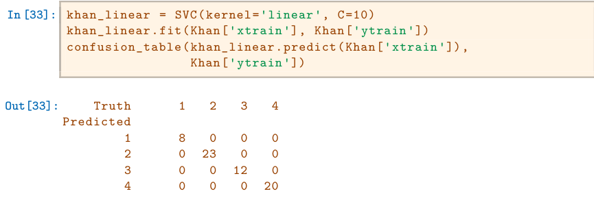
We see that there are no training errors. In fact, this is not surprising, because the large number of variables relative to the number of observations implies that it is easy to find hyperplanes that fully separate the classes.
We are more interested in the support vector classifier’s performance on the test observations.
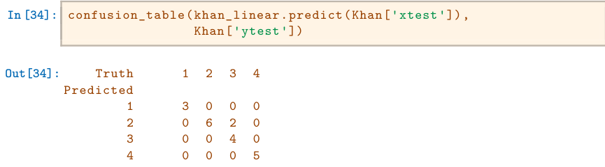
We see that using C=10 yields two test set errors on these data.
9.7Exercises#
Conceptual#
This problem involves hyperplanes in two dimensions.
- Sketch the hyperplane 1 + 3X1 −X2 = 0. Indicate the set of points for which 1 + 3X1 −X2 > 0, as well as the set of points for which 1 + 3X1 −X2 < 0.
- On the same plot, sketch the hyperplane −2 + X1 + 2X2 = 0. Indicate the set of points for which −2 + X1 + 2X2 > 0, as well as the set of points for which −2 + X1 + 2X2 < 0.
We have seen that in p = 2 dimensions, a linear decision boundary takes the form β0+β1X1+β2X2 = 0. We now investigate a non-linear decision boundary.
- Sketch the curve

- On your sketch, indicate the set of points for which

as well as the set of points for which

- Suppose that a classifier assigns an observation to the blue class if

and to the red class otherwise. To what class is the observation (0, 0) classified? (−1, 1)? (2, 2)? (3, 8)?
- Argue that while the decision boundary in (c) is not linear in terms of X1 and X2, it is linear in terms of X1, X12, X2, and X2 2.
Here we explore the maximal margin classifier on a toy data set.
- We are given n = 7 observations in p = 2 dimensions. For each observation, there is an associated class label.
- Sketch the optimal separating hyperplane, and provide the equation for this hyperplane (of the form (9.1)).
- Describe the classification rule for the maximal margin classifier. It should be something along the lines of “Classify to Red if β0 + β1X1 + β2X2 > 0, and classify to Blue otherwise.” Provide the values for β0, β1, and β2.
- On your sketch, indicate the margin for the maximal margin hyperplane.
- Indicate the support vectors for the maximal margin classifier.
- Argue that a slight movement of the seventh observation would not affect the maximal margin hyperplane.
- Sketch a hyperplane that is not the optimal separating hyperplane, and provide the equation for this hyperplane.
- Draw an additional observation on the plot so that the two classes are no longer separable by a hyperplane.
Applied#
Generate a simulated two-class data set with 100 observations and two features in which there is a visible but non-linear separation between the two classes. Show that in this setting, a support vector machine with a polynomial kernel (with degree greater than 1) or a radial kernel will outperform a support vector classifier on the training data. Which technique performs best on the test data? Make plots and report training and test error rates in order to back up your assertions.
We have seen that we can fit an SVM with a non-linear kernel in order to perform classification using a non-linear decision boundary. We will now see that we can also obtain a non-linear decision boundary by performing logistic regression using non-linear transformations of the features.
- Generate a data set with n = 500 and p = 2, such that the observations belong to two classes with a quadratic decision boundary between them. For instance, you can do this as follows:
rng = np.random.default_rng(5)
x1 = rng.uniform(size=500) - 0.5
x2 = rng.uniform(size=500) - 0.5
y = x1**2 - x2**2 > 0- Plot the observations, colored according to their class labels. Your plot should display X1 on the x-axis, and X2 on the yaxis.
- Fit a logistic regression model to the data, using X1 and X2 as predictors.
- Apply this model to the training data in order to obtain a predicted class label for each training observation. Plot the observations, colored according to the predicted class labels. The decision boundary should be linear.
- Now fit a logistic regression model to the data using non-linear functions of X1 and X2 as predictors (e.g. X12, X1×X2, log(X2), and so forth).
- Apply this model to the training data in order to obtain a predicted class label for each training observation. Plot the observations, colored according to the predicted class labels. The decision boundary should be obviously non-linear. If it is not, then repeat (a)–(e) until you come up with an example in which the predicted class labels are obviously non-linear.
- Fit a support vector classifier to the data with X1 and X2 as predictors. Obtain a class prediction for each training observation. Plot the observations, colored according to the predicted class labels.
- Fit a SVM using a non-linear kernel to the data. Obtain a class prediction for each training observation. Plot the observations, colored according to the predicted class labels.
- Comment on your results.
At the end of Section 9.6.1, it is claimed that in the case of data that is just barely linearly separable, a support vector classifier with a small value of
Cthat misclassifies a couple of training observations may perform better on test data than one with a huge value ofCthat does not misclassify any training observations. You will now investigate this claim.- Generate two-class data with p = 2 in such a way that the classes are just barely linearly separable.
- Compute the cross-validation error rates for support vector classifiers with a range of
Cvalues. How many training observations are misclassified for each value ofCconsidered, and how does this relate to the cross-validation errors obtained? - Generate an appropriate test data set, and compute the test errors corresponding to each of the values of
Cconsidered. Which value ofCleads to the fewest test errors, and how does this compare to the values ofCthat yield the fewest training errors and the fewest cross-validation errors? - Discuss your results.
In this problem, you will use support vector approaches in order to predict whether a given car gets high or low gas mileage based on the
Autodata set.- Create a binary variable that takes on a 1 for cars with gas mileage above the median, and a 0 for cars with gas mileage below the median.
- Fit a support vector classifier to the data with various values of
C, in order to predict whether a car gets high or low gas mileage. Report the cross-validation errors associated with different values of this parameter. Comment on your results. Note you will need to fit the classifier without the gas mileage variable to produce sensible results. - Now repeat (b), this time using SVMs with radial and polynomial basis kernels, with different values of
gammaanddegreeandC. Comment on your results. - Make some plots to back up your assertions in (b) and (c).
Hint: In the lab, we used the plot_svm() function for fitted SVMs. When p > 2, you can use the keyword argument features to create plots displaying pairs of variables at a time.
This problem involves the
OJdata set which is part of theISLPpackage.- Create a training set containing a random sample of 800 observations,andatestsetcontainingtheremaining observations.
- Fit a support vector classifier to the training data using
C = 0.01, withPurchaseas the response and the other variables as predictors. How many support points are there? - What are the training and test error rates?
- Use cross-validation to select an optimal
C. Consider values in the range 0.01 to 10. - Compute the training and test error rates using this new value for
C. - Repeat parts (b) through (e) using a support vector machine with a radial kernel. Use the default value for
gamma. - Repeat parts (b) through (e) using a support vector machine with a polynomial kernel. Set
degree = 2. - Overall, which approach seems to give the best results on this data?